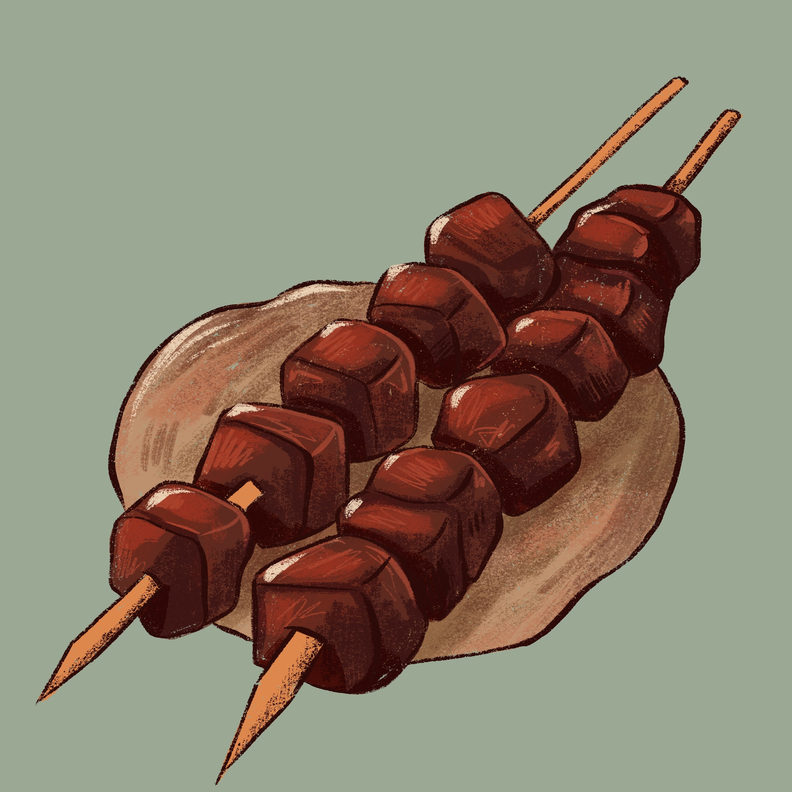

HISTÓRIA: O churrasco tem origem milenar, ligada à descoberta do fogo, mas consolidou-se como tradição no Sul do Brasil (pampas) pelos gaúchos, influenciado por técnicas indígenas de assar carne. A introdução de gado pelos jesuítas no século XVII facilitou a prática. Tornou-se símbolo cultural de união, evoluindo do fogo de chão para churrasqueiras modernas.
INGREDIENTES: Carnes (picanha, fraldinha, linguiça, coração de galinha), carvão, pão de alho, vinagrete e sal grosso.